SECTION A: (25 marks)
1. State the reason why an object on earth has a heigher weight than on the moon. (1 mark)
2. Figure 1 shows the position of a students cye while illustrate the length of a wooden block using a theme rule.
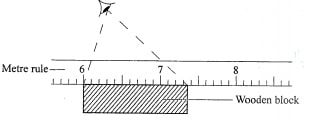
Determine the 1cngth of’the block as viewcd by the student. (1 mark)
3. Describe how the knowledge of the oil drop experiment may be used to estimate the area of oil spillage from a ship in the sea assuming the sum face water is not distort bed. (3 marks)
4. Figure 2 shows an instrument used to measure atmospheric pressure.
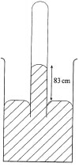
State with a reason the modification that would be required in a similar set up if mercury were to be replaced with water. (2 marks)
5. It is observed that a drop of milk carefully put into a cup of water tums the water white after some time. State the reason for this observation. (1 mark)
6. Figure 3 shows the shape of a bimetallic strip after it was coolcd below room temperature.
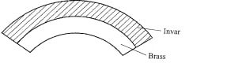
Explain why the strip curved is as shown. (2 marks
)
7. A wooden cube of side 0.5m floats in water frilly submerged. Determine the weight of’the cube.density of the water = 1gm-3). (2 marks)
8. Figure 4 shows a stonc whirled in a veitical circle.
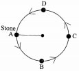
On the axes provided, sketch a graph of tension against time as the stone moves through point A, B, C and D. (3 marks)
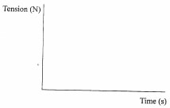
9. Figure 5 shows a ball spinning as it moves.
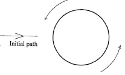
(a) On the diagram, sketch the path followed by the ball as it moves.(1 mark)
(b) Explain why the ball takes that path.(3 mark)
10. Figure 6 shows the relationship between volume and pressure for a certain gas.
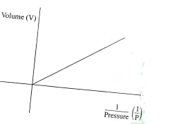
11. Figure 7 shows an L-shaped wooden structure.
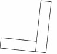
On the diagram construct appropriate lines to show the position of’ the centre of gravity for the structrne. (2 marks)
12. Figure 8 shows the graph of extension against force for a certain helical spring.
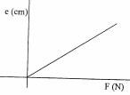
On the same diagram sketch the graph of extension against force for a spring with a lower value of spring constant. (1 mark)
13. State two ways in which a mercury based thermometer can be modified to read very small temperature changes. (2 marks)
SECTION B (55 marks)
14. (a) State Evo differences between boiling and evapoiation.(2 marks)
(b) State three ways in which loss of heat by conduction is minimised in a vacuum flask. (3 marks)
Determine the:
(i) quantity of heat lost by steam to change to water at 100 °C.(2 marks)
(ii) quantity of heat lost by water to cool to 0°C.(2 marks)
(iii) mass of ice melted at 0 °C.(2 marks)
15. (a) State Newton’s fiist law’ of motion. (1 mark)
(b) A wooden block resting on a horizontal bench is given an initial velocity u so that it slides on the bench for a distance x before it stops.
Various values of x are measured for different alnes of’tlie initial velocity. Figure 9 shows a graph of u2 against x.
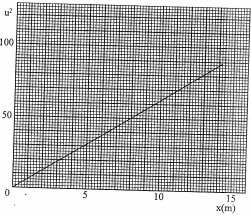
(i) Determine the slope S of the graph. (3 marks)
(ii) Determine the value of k given that u2 = 20kd where k is a frictional constant for the sui tacc. (2 marks)
(iii) State with a reason what happens to the value of k when the roughness of the bench surface is reduced. (2 marks)
(c) An object is thrown vertically upwards with an initial velocity of 30 ms '. Determine its maximum height (acceleration due to gravity g is 10 mw’). (3 marks)
16. (a) An electie crane uses 8.0 x 10‘ N of energy to lift a load of 2.0 X 104 N in 4 s.
( i) Determine the
I power developed by the crane,(3 marks)
lI height to which the load is lifted, (2 marks)
111 efficiency of the crane whose motor is rated 2.5 X 10'W. (2 marks)
iii) Sure two forms of energy transformation that lead to the crane’s inefficiency. (2 marks)
(b) A stone is dropped from the top of a building to the ground. On the axes provided, sketch a graph of potential enemy against time for the stone. (1 mark)
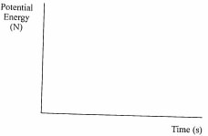
17. (a) State Pascal’s principle of transmission of pressure in liquids. (b) Figure 10 shows heights of two immiscible liquids X and Y in a U-tube (drawn to scale).
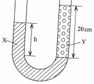
(i) State with a reason which of the two liquids X and Y has a higher density. (2 marks)
(ii) Determine the value of h. (2 marks)
iii) Given that the density of liquid Y is p, write down an expression for the density d of liquid x in terms of p. (2 marks)
(c) ( i) With the aid of a diagram, describe how a liquid may be siphoned from one container to another using a flexible tube. (3 marks)
iii) Sums one application of the siphon. (1 mark)
18. (a) State two quantities that must be kept constant in order to verify Boyle’s law. (2 marks)
(b) An air bubble at the bottom of a beaker full of water becomes larger as it rises to the surface. State the reason why;
(i) the bubble rises to the surface,(1 marks)
(ii) it becomes larger as it rises.(1 marks)
(c) State two assumptions made in explaining the gas laws using the kinetic theory of gases. (2 marks)
(d) Figure 11 shows an incomplete experimental set up that was prepared by a student to verily one of the gas laws.
Thermometer Pressure gauge 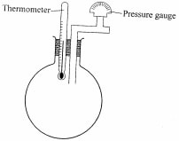
(i) State with a reason which one of the laws may be verified using the set up. (2 marks)
(ii) State what the student left out in the diagram of the set up. (1 mark)
(e) The volume of a fixed mass of a gas reduced from 500 cm3 to 300 cm3 at constant pressure. The initial temperature was 90K. Determine the final temperature. (3 marks)
Earth’s gravity is higher than the moon’s gravity
7.3 —6.0 = 1.3cm
Using the same oil spilled, to measure a known volume. Determine the area of spread of the measured volume (on the same water (sample). Estimate the area of spread on the sea.
(a) State with a reason the modification that would be required in a similar set up if mercury were to be replaced with water. (2 marks)
The tube will be very long since water has much lower density than mercury
Milk particles move to occupy the spaces between the water particles through diffusion.
Explain why the strip curved is as shown. (2 marks)
Brass contracts more than invar hence contracts leaving the side with invar longer hence the curve.
7. A wooden cube of side 0.5m floats in water frilly submerged. Determine the weight of’the cube.density of the water = 1gm-3).(2 marks)
Volume of water displaced = 0.5 x 0.5 x 0.5
= 0. l25m3
W of cube. — weight of water displaced (a floating body)
= lx 125000g
= l25kg
= 1.25 x 103N
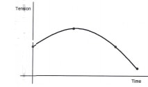
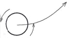
Because of Bemoullis effect caused by diference in air pressure due to the streamlines. As the ball moves to the right airstreams move to the left . Spin is anti-clockwise, a region of low pressure forms above lifting the ball.
Name the law that the gas obeys (1 mark)
Boyles law
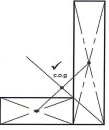
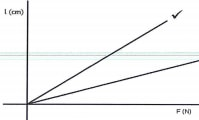
Making the bulb thinner. Making the bore narrower.
14. (a) State two differences between boiling and evaporation.(2 marks)
Boiling takes place at fixed temperature while evaporation takes at all temperatures. Boiling takes place in the entire liquid while evaporation takes place at the surface.
Presence of a vacuum. Poor conductor material used to make stopper. Use of glass (poor conductor).
(c) In a certain experiment, 50 g of dry steam at 100°C was directed into some crushed ice at 0 °C. (Latent heat ofvoporisation of water is 2.26 X 106 Jkg-I. latent heat of;fusion fi)r ice is 3.34 X 105 Jkg-/ and specific heat capacity of water is 4.2 X 103 Jkg-') Determine the:
Heat lost by steam at 100°C.
MLv =5.0 x 10-2x2.26x106
= 11.3 x 104
1.13 x 105J
Heat lost by hot water to cool to 0°C.
MCAθ = 5.0 x 10-2 x 4.2 x 103 x 102
= 2.1x 104J
Amount of ice melted at 0°C.
MiceLf = Mlv+MCA8 M= 2.1x 104 +1.13 x105/ 3.34 x 105 = 0.401kg. — 401g 15. (a) State Newton’s fiist law’ of motion. (1 mark) A body remains in its state of rest or uniform motion in a straight Line unless acted upon by an external force. (b) A wooden block resting on a horizontal bench is given an initial velocity u so that it slides on the bench for a distance x before it stops. Various values of x are measured for different alnes of’tlie initial velocity. Figure 9 shows a graph of u against x. (i) Determine the slope S of the graph. (3 marks) (i) Slope = ∆U2/∆x = 50 — 0/8-0 6.25 (ii) Determine the value of k given that u2 = 20kd where k is a frictional constant for the sui tacc. (2 marks) (ii) U2/x = 20k butU2/x= slope K=slope/20 6.25/20 K = 0.3125 (iii) State with a reason what happens to the value of k when the roughness of the bench surface is reduced. (2 marks) K would reduce since friction has reduced (c) An object is thrown vertically upwards with an initial velocity of 30 ms '. Determine its maximum height (acceleration due to gravity g is 10 mw’). (3 marks) Hmax =u2/2g =30 x 30/2 x 10 90/2 = 45m 16. (a) An electie crane uses 8.0 x 10‘ N of energy to lift a load of 2.0 X 104 N in 4 s. ( i) Determine the power developed by the crane,(3 marks) power = Work done time =80000 /4 = 20000W (ii) height to which the load is lifted, (2 marks) d = work/force 80000/20000 = 4 m (iii) efficiency of the crane whose motor is rated 2.5 X 10'W. (2 marks) Efficienc Workoutput/workinput x 100 20000/25000x100 =80.00% iii) Sure two forms of energy transformation that lead to the crane’s inefficiency. (2 marks) Mechanical energy heat and sound (b) A stone is dropped from the top of a building to the ground. On the axes provided, sketch a graph of potential enemy against time for the stone. (1 mark) 17. (a) State Pascal’s principle of transmission of pressure in liquids. Pressure applied at one part in a liquid is transmitted equally to all other parts of the enclosed liquid. (b) Figure 10 shows heights of two immiscible liquids X and Y in a U-tube (drawn to scale). (i) State with a reason which of the two liquids X and Y has a higher density. (2 marks) Liquid y is denser since it rises to a smaller height i.e. atmospheric pressure supports a lower height of y than x (ii) Determine the value of h. (2 marks) (ii) h = 2.2/3.6 x 20 =12.22cm iii) Given that the density of liquid Y is p, write down an expression for the density d of liquid x in terms of p. (2 marks) d/p = 3.6/2.2 = 1.636 d=1.6p (c) ( i) With the aid of a diagram, describe how a liquid may be siphoned from one container to another using a flexible tube. (3 marks) iii) Sums one application of the siphon. (1 mark) The flushing of a toilet Drinking using a straw. 18. (a) State two quantities that must be kept constant in order to verify Boyle’s law. (2 marks) Mass Temperature (b) An air bubble at the bottom of a beaker full of water becomes larger as it rises to the surface. State the reason why; The gas is less dense than the water. As it rises the pressre around the bubble reduces and since the temperature is the same, the volume increases (i) the bubble rises to the surface,(1 marks) The gas is less dense than the water. (ii) it becomes larger as it rises.(1 marks) As it rises the pressre around the bubble reduces and since the temperature is the same, the volume increases (c) State two assumptions made in explaining the gas laws using the kinetic theory of gases.(2 marks) The size of the molecules is assumed to be neglibible. Intermoleeular forces are also assumed to be negligible. Real gases can never have zero volume yet the gas laws assume presence of zero volume (d) Figure 11 shows an incomplete experimental set up that was prepared by a student to verily one of the gas laws. Thermometer Pressure gauge (i) State with a reason which one of the laws may be verified using the set up. (2 marks) The pressure law. Has ability to measure the temperature and the pressure while keeping the volume constant (ii) State what the student left out in the diagram of the set up. (1 mark) Source of heating for the temperature to be changedm (e) The volume of a fixed mass of a gas reduced from 500 cm3 to 300 cm3 at constant pressure. The initial temperature was 90K. Determine the final temperature. (3 marks) V1/T1= V2/T2 T2=300 x 90/500 = 54k
M= 2.1x 104 +1.13 x105/ 3.34 x 105 = 0.401kg. — 401g 15. (a) State Newton’s fiist law’ of motion. (1 mark) A body remains in its state of rest or uniform motion in a straight Line unless acted upon by an external force. (b) A wooden block resting on a horizontal bench is given an initial velocity u so that it slides on the bench for a distance x before it stops. Various values of x are measured for different alnes of’tlie initial velocity. Figure 9 shows a graph of u against x. (i) Determine the slope S of the graph. (3 marks) (i) Slope = ∆U2/∆x = 50 — 0/8-0 6.25 (ii) Determine the value of k given that u2 = 20kd where k is a frictional constant for the sui tacc. (2 marks) (ii) U2/x = 20k butU2/x= slope K=slope/20 6.25/20 K = 0.3125 (iii) State with a reason what happens to the value of k when the roughness of the bench surface is reduced. (2 marks) K would reduce since friction has reduced (c) An object is thrown vertically upwards with an initial velocity of 30 ms '. Determine its maximum height (acceleration due to gravity g is 10 mw’). (3 marks) Hmax =u2/2g =30 x 30/2 x 10 90/2 = 45m 16. (a) An electie crane uses 8.0 x 10‘ N of energy to lift a load of 2.0 X 104 N in 4 s. ( i) Determine the power developed by the crane,(3 marks) power = Work done time =80000 /4 = 20000W (ii) height to which the load is lifted, (2 marks) d = work/force 80000/20000 = 4 m (iii) efficiency of the crane whose motor is rated 2.5 X 10'W. (2 marks) Efficienc Workoutput/workinput x 100 20000/25000x100 =80.00% iii) Sure two forms of energy transformation that lead to the crane’s inefficiency. (2 marks) Mechanical energy heat and sound (b) A stone is dropped from the top of a building to the ground. On the axes provided, sketch a graph of potential enemy against time for the stone. (1 mark) 17. (a) State Pascal’s principle of transmission of pressure in liquids. Pressure applied at one part in a liquid is transmitted equally to all other parts of the enclosed liquid. (b) Figure 10 shows heights of two immiscible liquids X and Y in a U-tube (drawn to scale). (i) State with a reason which of the two liquids X and Y has a higher density. (2 marks) Liquid y is denser since it rises to a smaller height i.e. atmospheric pressure supports a lower height of y than x (ii) Determine the value of h. (2 marks) (ii) h = 2.2/3.6 x 20 =12.22cm iii) Given that the density of liquid Y is p, write down an expression for the density d of liquid x in terms of p. (2 marks) d/p = 3.6/2.2 = 1.636 d=1.6p (c) ( i) With the aid of a diagram, describe how a liquid may be siphoned from one container to another using a flexible tube. (3 marks) iii) Sums one application of the siphon. (1 mark) The flushing of a toilet Drinking using a straw. 18. (a) State two quantities that must be kept constant in order to verify Boyle’s law. (2 marks) Mass Temperature (b) An air bubble at the bottom of a beaker full of water becomes larger as it rises to the surface. State the reason why; The gas is less dense than the water. As it rises the pressre around the bubble reduces and since the temperature is the same, the volume increases (i) the bubble rises to the surface,(1 marks) The gas is less dense than the water. (ii) it becomes larger as it rises.(1 marks) As it rises the pressre around the bubble reduces and since the temperature is the same, the volume increases (c) State two assumptions made in explaining the gas laws using the kinetic theory of gases.(2 marks) The size of the molecules is assumed to be neglibible. Intermoleeular forces are also assumed to be negligible. Real gases can never have zero volume yet the gas laws assume presence of zero volume (d) Figure 11 shows an incomplete experimental set up that was prepared by a student to verily one of the gas laws. Thermometer Pressure gauge (i) State with a reason which one of the laws may be verified using the set up. (2 marks) The pressure law. Has ability to measure the temperature and the pressure while keeping the volume constant (ii) State what the student left out in the diagram of the set up. (1 mark) Source of heating for the temperature to be changedm (e) The volume of a fixed mass of a gas reduced from 500 cm3 to 300 cm3 at constant pressure. The initial temperature was 90K. Determine the final temperature. (3 marks) V1/T1= V2/T2 T2=300 x 90/500 = 54k
— 401g
A body remains in its state of rest or uniform motion in a straight Line unless acted upon by an external force.
Various values of x are measured for different alnes of’tlie initial velocity. Figure 9 shows a graph of u against x. (i) Determine the slope S of the graph. (3 marks) (i) Slope = ∆U2/∆x = 50 — 0/8-0 6.25 (ii) Determine the value of k given that u2 = 20kd where k is a frictional constant for the sui tacc. (2 marks) (ii) U2/x = 20k butU2/x= slope K=slope/20 6.25/20 K = 0.3125 (iii) State with a reason what happens to the value of k when the roughness of the bench surface is reduced. (2 marks) K would reduce since friction has reduced (c) An object is thrown vertically upwards with an initial velocity of 30 ms '. Determine its maximum height (acceleration due to gravity g is 10 mw’). (3 marks) Hmax =u2/2g =30 x 30/2 x 10 90/2 = 45m 16. (a) An electie crane uses 8.0 x 10‘ N of energy to lift a load of 2.0 X 104 N in 4 s. ( i) Determine the power developed by the crane,(3 marks) power = Work done time =80000 /4 = 20000W (ii) height to which the load is lifted, (2 marks) d = work/force 80000/20000 = 4 m (iii) efficiency of the crane whose motor is rated 2.5 X 10'W. (2 marks) Efficienc Workoutput/workinput x 100 20000/25000x100 =80.00% iii) Sure two forms of energy transformation that lead to the crane’s inefficiency. (2 marks) Mechanical energy heat and sound (b) A stone is dropped from the top of a building to the ground. On the axes provided, sketch a graph of potential enemy against time for the stone. (1 mark) 17. (a) State Pascal’s principle of transmission of pressure in liquids. Pressure applied at one part in a liquid is transmitted equally to all other parts of the enclosed liquid. (b) Figure 10 shows heights of two immiscible liquids X and Y in a U-tube (drawn to scale). (i) State with a reason which of the two liquids X and Y has a higher density. (2 marks) Liquid y is denser since it rises to a smaller height i.e. atmospheric pressure supports a lower height of y than x (ii) Determine the value of h. (2 marks) (ii) h = 2.2/3.6 x 20 =12.22cm iii) Given that the density of liquid Y is p, write down an expression for the density d of liquid x in terms of p. (2 marks) d/p = 3.6/2.2 = 1.636 d=1.6p (c) ( i) With the aid of a diagram, describe how a liquid may be siphoned from one container to another using a flexible tube. (3 marks) iii) Sums one application of the siphon. (1 mark) The flushing of a toilet Drinking using a straw. 18. (a) State two quantities that must be kept constant in order to verify Boyle’s law. (2 marks) Mass Temperature (b) An air bubble at the bottom of a beaker full of water becomes larger as it rises to the surface. State the reason why; The gas is less dense than the water. As it rises the pressre around the bubble reduces and since the temperature is the same, the volume increases (i) the bubble rises to the surface,(1 marks) The gas is less dense than the water. (ii) it becomes larger as it rises.(1 marks) As it rises the pressre around the bubble reduces and since the temperature is the same, the volume increases (c) State two assumptions made in explaining the gas laws using the kinetic theory of gases.(2 marks) The size of the molecules is assumed to be neglibible. Intermoleeular forces are also assumed to be negligible. Real gases can never have zero volume yet the gas laws assume presence of zero volume (d) Figure 11 shows an incomplete experimental set up that was prepared by a student to verily one of the gas laws. Thermometer Pressure gauge (i) State with a reason which one of the laws may be verified using the set up. (2 marks) The pressure law. Has ability to measure the temperature and the pressure while keeping the volume constant (ii) State what the student left out in the diagram of the set up. (1 mark) Source of heating for the temperature to be changedm (e) The volume of a fixed mass of a gas reduced from 500 cm3 to 300 cm3 at constant pressure. The initial temperature was 90K. Determine the final temperature. (3 marks) V1/T1= V2/T2 T2=300 x 90/500 = 54k
(i) Slope = ∆U2/∆x
= 50 — 0/8-0
6.25
(ii) U2/x = 20k butU2/x= slope
K=slope/20
6.25/20
K = 0.3125
K would reduce since friction has reduced
Hmax =u2/2g =30 x 30/2 x 10 90/2 = 45m
power developed by the crane,(3 marks)
power = Work done
time =80000 /4
= 20000W
(ii) height to which the load is lifted, (2 marks)
d = work/force
80000/20000
= 4 m
(iii) efficiency of the crane whose motor is rated 2.5 X 10'W. (2 marks)
Efficienc Workoutput/workinput x 100
20000/25000x100
=80.00%
Mechanical energy heat and sound
17. (a) State Pascal’s principle of transmission of pressure in liquids.
Pressure applied at one part in a liquid is transmitted equally to all other parts of the enclosed liquid.
(b) Figure 10 shows heights of two immiscible liquids X and Y in a U-tube (drawn to scale).
Liquid y is denser since it rises to a smaller height i.e. atmospheric pressure supports a lower height of y than x
(ii) h = 2.2/3.6 x 20
=12.22cm
d/p = 3.6/2.2 = 1.636
d=1.6p
The flushing of a toilet Drinking using a straw.
Mass Temperature
The gas is less dense than the water. As it rises the pressre around the bubble reduces and since the temperature is the same, the volume increases
The gas is less dense than the water.
As it rises the pressre around the bubble reduces and since the temperature is the same, the volume increases
(c) State two assumptions made in explaining the gas laws using the kinetic theory of gases.(2 marks)
The size of the molecules is assumed to be neglibible. Intermoleeular forces are also assumed to be negligible. Real gases can never have zero volume yet the gas laws assume presence of zero volume
Thermometer Pressure gauge
The pressure law. Has ability to measure the temperature and the pressure while keeping the volume constant
Source of heating for the temperature to be changedm
V1/T1= V2/T2
T2=300 x 90/500
= 54k